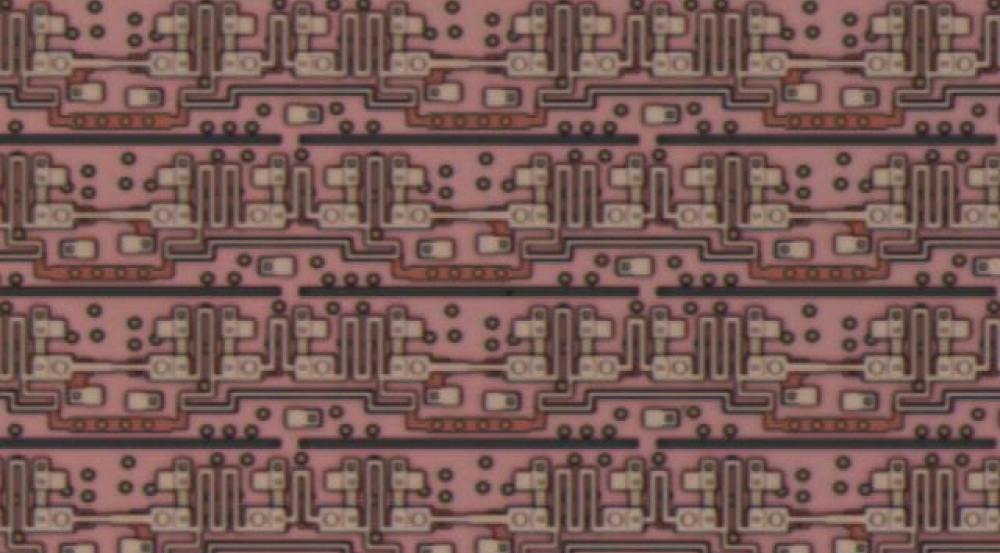

I spent Summer 2022 at Lincoln Labs in Lexington in the Quantum Information and
Integrated Nanosystems group. Within the group, I focused on single flux quantum (SFQ)
circuits, which allow for faster digital computing. By increasing the number of Josephson
junctions on a chip, the number of layers on the chip, or decreasing the size of components,
a faster and more efficient circuit can be created. I tested various kinds of SFQ circuits,
as well as creating testing scripts and using MATLAB for data analysis.

Picture of a single-flux quantum shift register fabricated at Lincoln Labs - one of the kinds of circuits I tested.
The first part of my internship focused on learning about Josephson junctions and the chip fabrication process.
The tests that I initally ran were on Process Control Module chips, which tested whether the chips and junctions
were correctly fabricated. The specific circuit components that I tested were snakes and combs, shift registers, and Josephson junctions.
To test these circuits, I controlled an Octopux, which is essentially a controllable box of relays, using MATLAB to send voltage and current increments
to specific pins.
During the second part of my internship, I worked on superconducting nanowire single-photon detectors (SNSPDs). We received
a chip from our collaborators at MIT, and I was designated with choosing packaging for it, creating a wiring diagram, and testing its functionality.
As this chip was larger than our in-house fabricated chips, I needed to use one of the larger packages that we used for testing qubits.
These larger packages can only be tested in the cryocooler. After wiring up the package to the Octopux through the various stages of the cryocooler.
To test the SNSPD, we first needed to intially test the dark counts, which is the number of times the SNSPD registers a photon without any inputted light.
To test this, I applied a bias current and read the output values off an oscilloscope. I also ran tests using a MATLAB script to control the Octopux, and
determined the number of dark counts by setting a voltage threshold, and if the outputted voltage read above it, counting it as a dark count.